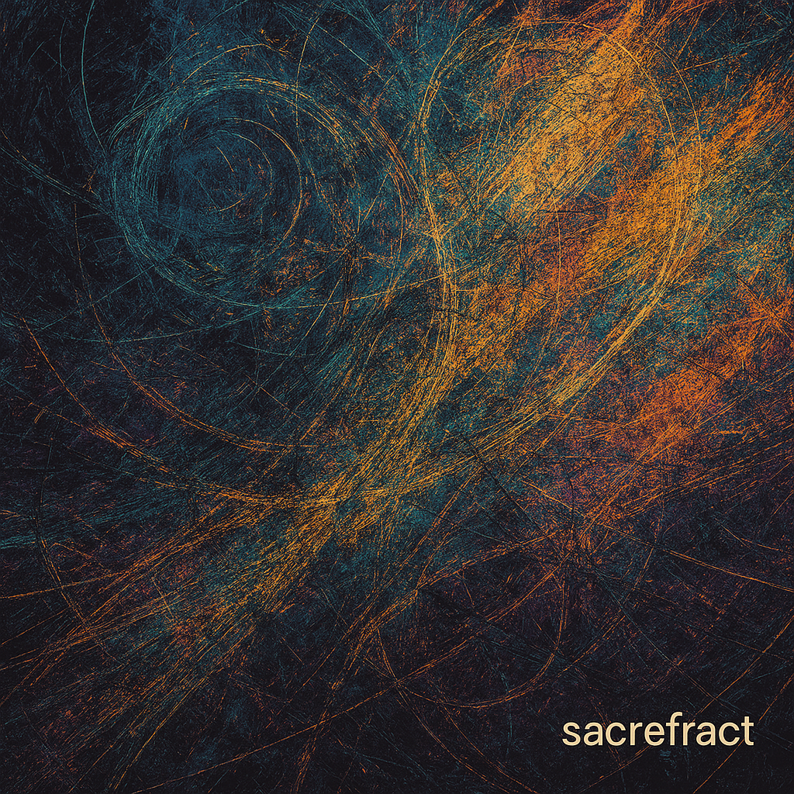
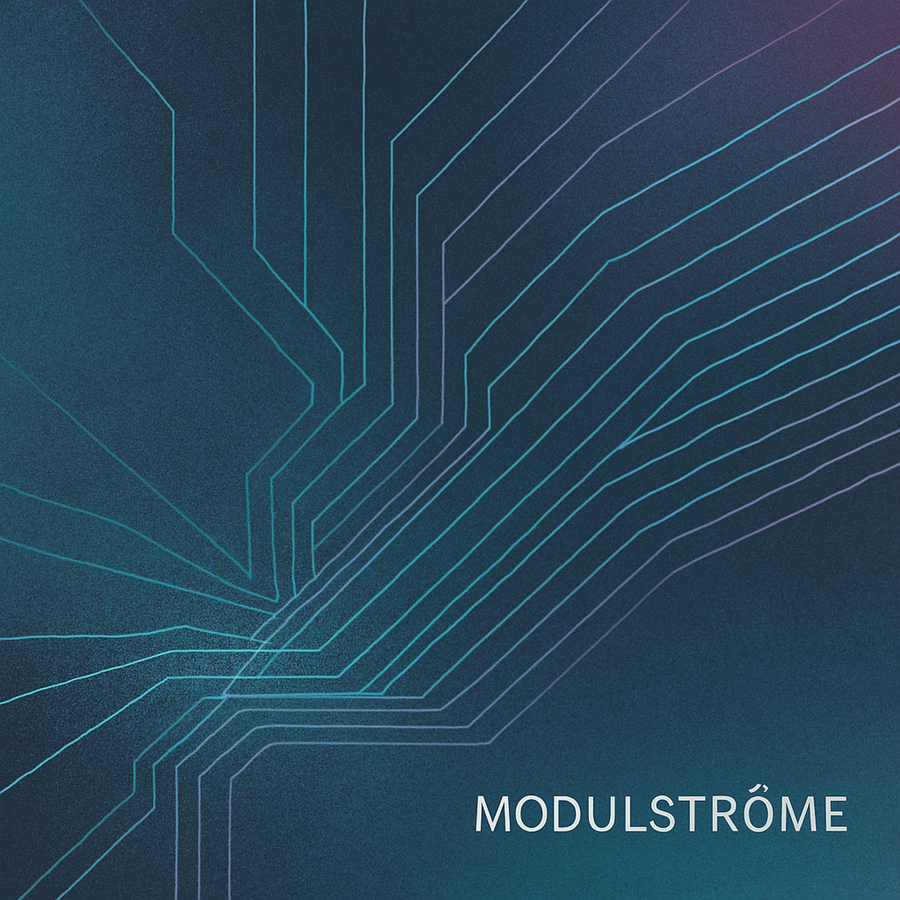
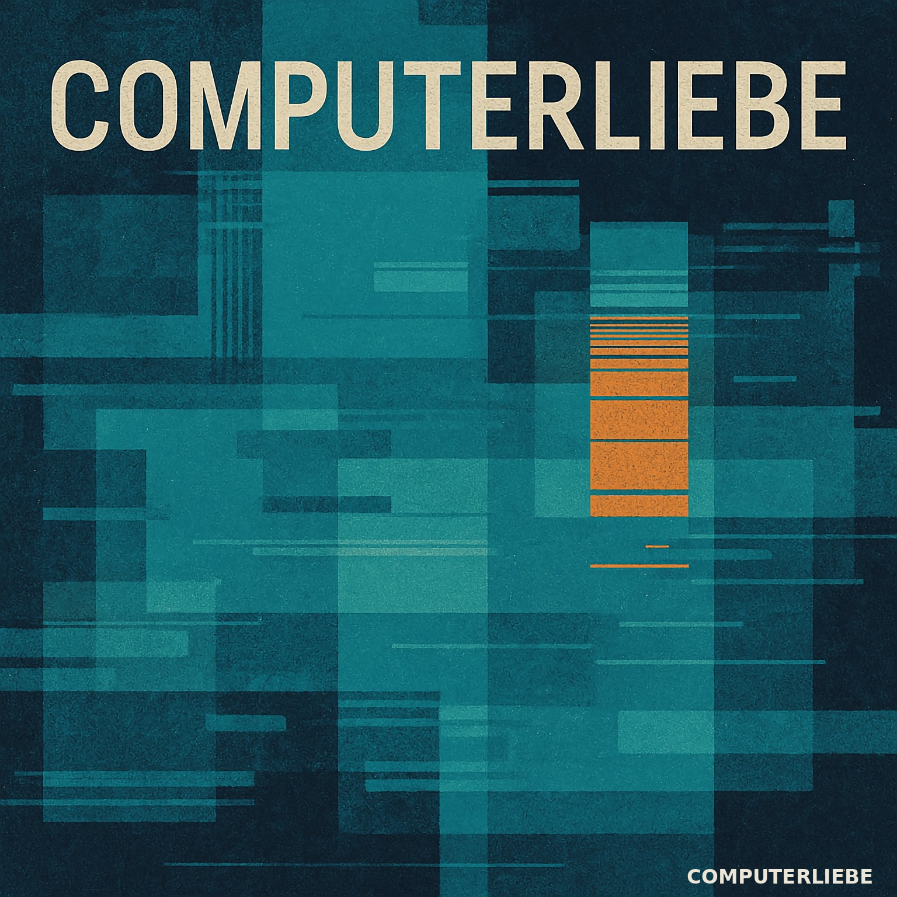
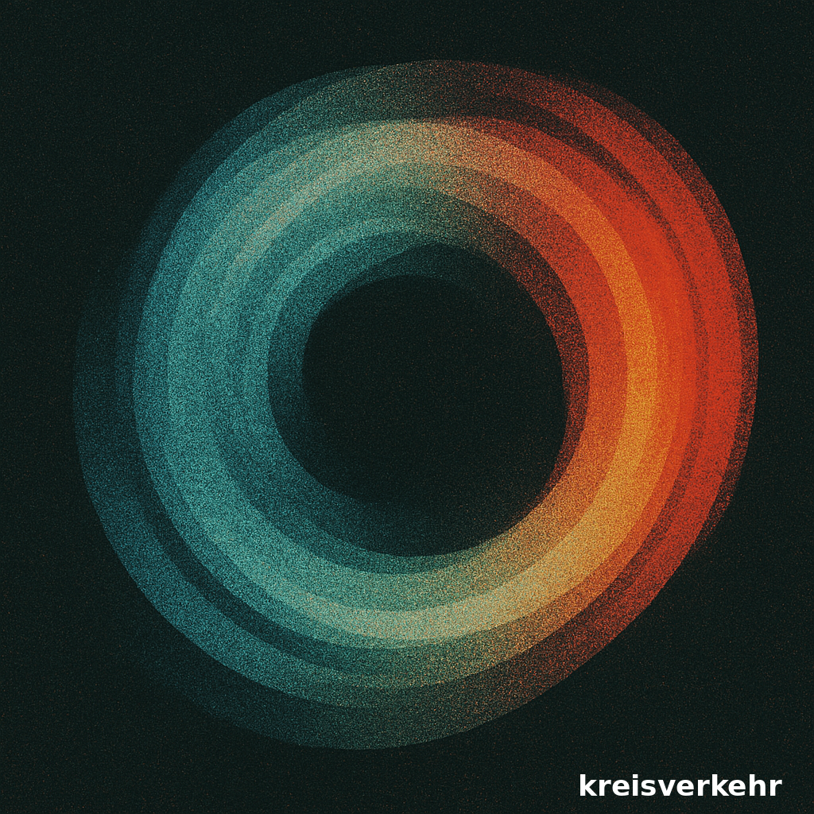

MUSIC
visuals
now

sacrefract
Fragmentierter Beginn. Drei Spuren, ein Moment. SuperCollider trifft auf Stravinsky, Noise und Stille.
Auf Bandcamp anhören

Modulströme
Modular erzeugte Klangfelder. Langsam, elektrisiert, vibrierend. Zwischen Oszillation und Drift.
Auf Bandcamp anhören

Computerliebe
Zart zerstörte Klangformen. Zwischen Sehnsucht, Glitch und Jazz. Ein Album, das sich nicht entscheiden will – und genau darin liegt sein Charme.
Auf Bandcamp anhören

kreisverkehr
Beat Repeat als Stimme. Frühe Phase, geprägt von Schmatz, Clicks und Strukturen im Loop.
Auf Bandcamp anhören